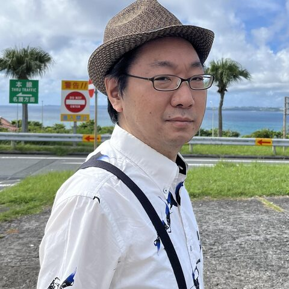

Takeru Nakazato
NITE Biological Resource Center (NBRC) · Japan
NBRC provides bacteria and fungi as a bioresource center. POMIC — a catalog of microorganisms that utilize CO2. Interested in linking data across microbial culture collections and databases.
Topics: Microbiology, Databases, Biodiversity, FAIR/Standards
Codes in: Perl, Python